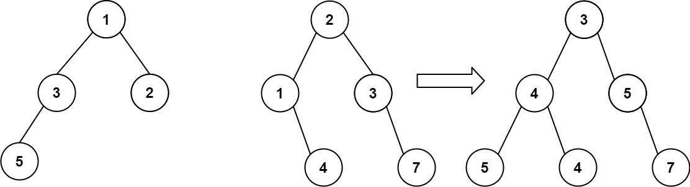

617. 合并二叉树
| 题目信息 | 内容 |
|---|---|
| 难度 | 简单 |
| 核心模式 | 二叉树递归（同步遍历两棵树） |
| 时间复杂度 | O(min(m, n))，m、n 为两棵树的节点数 |
| 空间复杂度 | O(min(m, n))，递归栈深度 |
题目与约束
给你两棵二叉树： root1 和 root2 。
想象一下，当你将其中一棵覆盖到另一棵之上时，两棵树上的一些节点将会重叠（而另一些不会）。你需要将这两棵树合并成一棵新二叉树。合并的规则是：如果两个节点重叠，那么将这两个节点的值相加作为合并后节点的新值；否则，不为 null 的节点将直接作为新二叉树的节点。
返回合并后的二叉树。
注意: 合并过程必须从两个树的根节点开始。
示例 1：

输入：root1 = [1,3,2,5], root2 = [2,1,3,null,4,null,7]
输出：[3,4,5,5,4,null,7]
示例 2：
输入：root1 = [1], root2 = [1,2]
输出：[2,2]
提示：
-
两棵树中的节点数目在范围
[0, 2000]内 -
-104 <= Node.val <= 104
核心不变量
对任意一对对应节点：两者都存在时值相加并继续递归；只要有一方为空，就直接返回另一方子树，无需再往下处理。
完整推导
思路推导
- 直觉（合并是逐节点一一对应的）
两棵树的根对齐，左对左、右对右。合并结果中每个位置的取值只取决于同一位置上的两个节点。这天然是一棵「按同样结构递归」的题目：先处理当前节点，再分别处理左右子树。
- 递归三要素
- 终止条件：若
root1为空，说明这棵子树没有内容，直接返回root2；若root2为空，直接返回root1。这样「一方为空」的分支就能整体嫁接过来，不必逐节点遍历。 - 当前层处理：两棵都不为空时，把
root2.val累加到root1.val上，用root1作为合并后的节点。 - 递归子问题：
root1.left = merge(root1.left, root2.left)，右子树同理。
- 小例子
示例 1：根节点 1 + 2 = 3；左孩子 3 + 1 = 4；右孩子 2 + 3 = 5。root1 左孩子的左孩子是 5，而 root2 对应位置为空，于是直接保留 5；root2 左孩子的右孩子是 4，root1 对应为空，于是直接嫁接到 4；右孩子 7 同理保留。结果 [3,4,5,5,4,null,7]，与题目一致。
- 原地复用 vs 新建
直接在 root1 上修改即可（返回值就是 root1）。因为一旦某一方为空就整体返回另一方，没有重叠的子树会被原样复用，天然做到「不为 null 的节点直接作为新节点」。若题目要求不破坏原树，再考虑新建节点。
Java 实现（递归合并）
/**
* Definition for a binary tree node.
* public class TreeNode {
* int val;
* TreeNode left;
* TreeNode right;
* TreeNode() {}
* TreeNode(int val) { this.val = val; }
* TreeNode(int val, TreeNode left, TreeNode right) {
* this.val = val;
* this.left = left;
* this.right = right;
* }
* }
*/
class Solution {
public TreeNode mergeTrees(TreeNode root1, TreeNode root2) {
// 一方为空，直接返回另一方（整棵子树嫁接）
if (root1 == null) return root2;
if (root2 == null) return root1;
// 两棵都不为空：值相加，复用 root1 作为合并后的节点
root1.val += root2.val;
// 递归合并左右子树
root1.left = mergeTrees(root1.left, root2.left);
root1.right = mergeTrees(root1.right, root2.right);
return root1;
}
}
复杂度
- 时间：
O(min(m, n))。只有两棵树对应位置都存在的节点才会被访问并继续递归；一旦某方为空就整枝返回，故访问量不超过较小树的节点数。 - 空间：
O(min(m, n))。递归栈的最大深度等于重叠部分的高度，最坏为较小树的树高，退化成链表时为O(min(m, n))。
易错点与扩展（面试高频考点）
- 终止条件顺序：先判
root1 == null返回root2，再判root2 == null返回root1，两者都为空时返回null也自然成立。 - 忘记返回值：递归要写成
root1.left = mergeTrees(...)，只调用不赋值会导致子树丢失。 - 原地修改的副作用：本解法复用了
root1，会改变输入的树；若业务不允许修改输入，应新建节点。 - 迭代写法：也可用队列成对入队做 BFS，遇到一方为空就把另一方接到父节点上，避免递归栈溢出，适合树很深的情况。
- 面试追问：若要求「重叠时取较大值」或「乘积」等其它规则，只需修改当前层的合并逻辑，框架不变。
力扣原题
C++ 实现
/**
* Definition for a binary tree node.
* struct TreeNode {
* int val;
* TreeNode *left;
* TreeNode *right;
* TreeNode() : val(0), left(nullptr), right(nullptr) {}
* TreeNode(int x) : val(x), left(nullptr), right(nullptr) {}
* TreeNode(int x, TreeNode *left, TreeNode *right) : val(x), left(left), right(right) {}
* };
*/
class Solution {
public:
TreeNode* mergeTrees(TreeNode* root1, TreeNode* root2) {
if (root1 == nullptr) return root2; // 整枝嫁接
if (root2 == nullptr) return root1;
root1->val += root2->val; // 重叠节点值相加
root1->left = mergeTrees(root1->left, root2->left);
root1->right = mergeTrees(root1->right, root2->right);
return root1;
}
};
Python 实现
# Definition for a binary tree node.
# class TreeNode:
# def __init__(self, val=0, left=None, right=None):
# self.val = val
# self.left = left
# self.right = right
class Solution:
def mergeTrees(self, root1: TreeNode | None, root2: TreeNode | None) -> TreeNode | None:
if root1 is None:
return root2 # 整枝嫁接
if root2 is None:
return root1
root1.val += root2.val # 重叠节点值相加
root1.left = self.mergeTrees(root1.left, root2.left)
root1.right = self.mergeTrees(root1.right, root2.right)
return root1